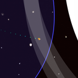

In Tether, you play the pilot of a Planet Collector Tethercraft, gathering planets using a massive cable. The goal is to connect all of the planets in the level into one network.
Tether was a Ludum Dare Jam entry, in which the theme was "connected worlds". It was produced by a team of four:
- Chris Mondok - Developer
- Bill Rossi - Developer
- Miki Tharp - Art
- Ryan Shello - Music and sound effects
On a personal note, I love how this game came together. By Saturday night, we thought the project would be a massive failure, and none of us could remember our high school physics. Despite that, we got everything working smoothly enough on Sunday, and things were looking a lot better. The graphics by Miki and the audio from Ryan really tie it together. We got the ability to have multiple levels, and then a win and loss condition, within the last hour of the jam.
This game was also my first foray into the web audio API.
Screenshots
